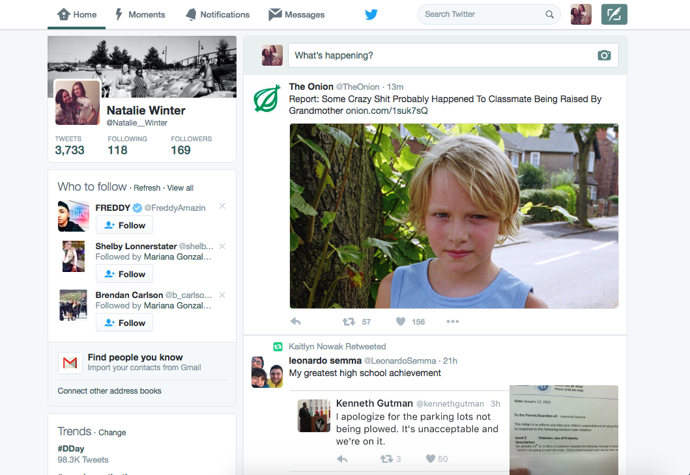
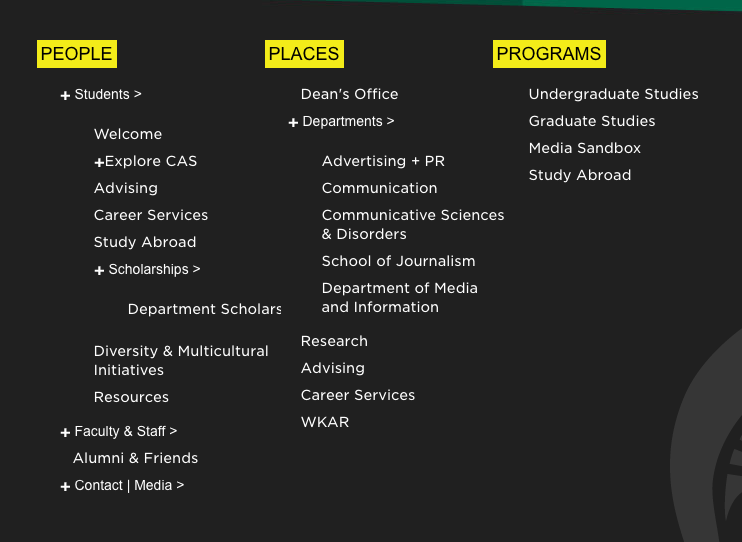
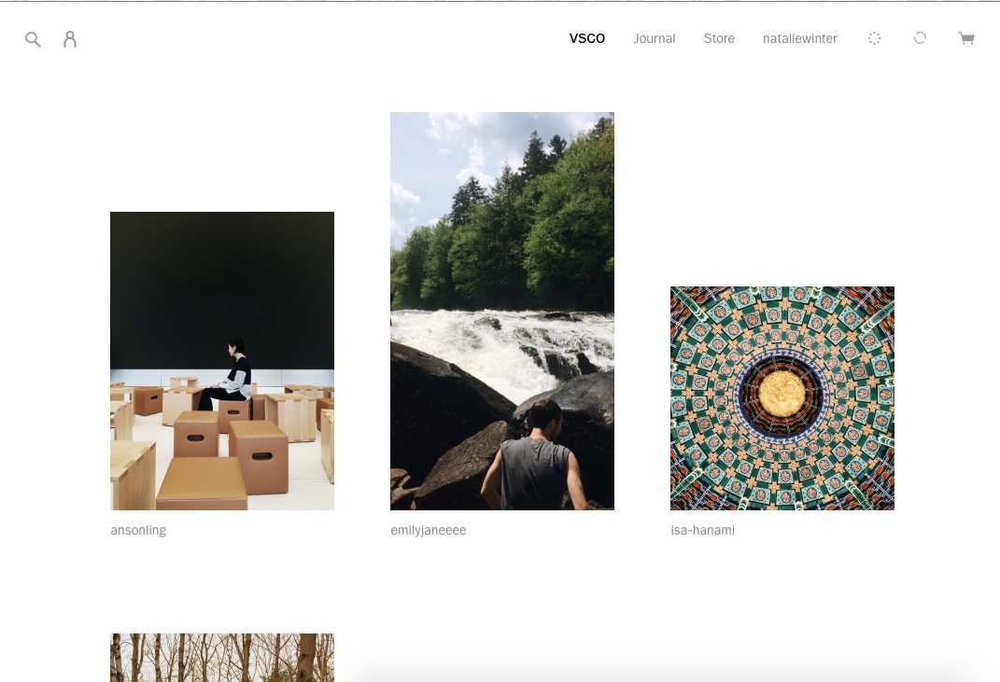
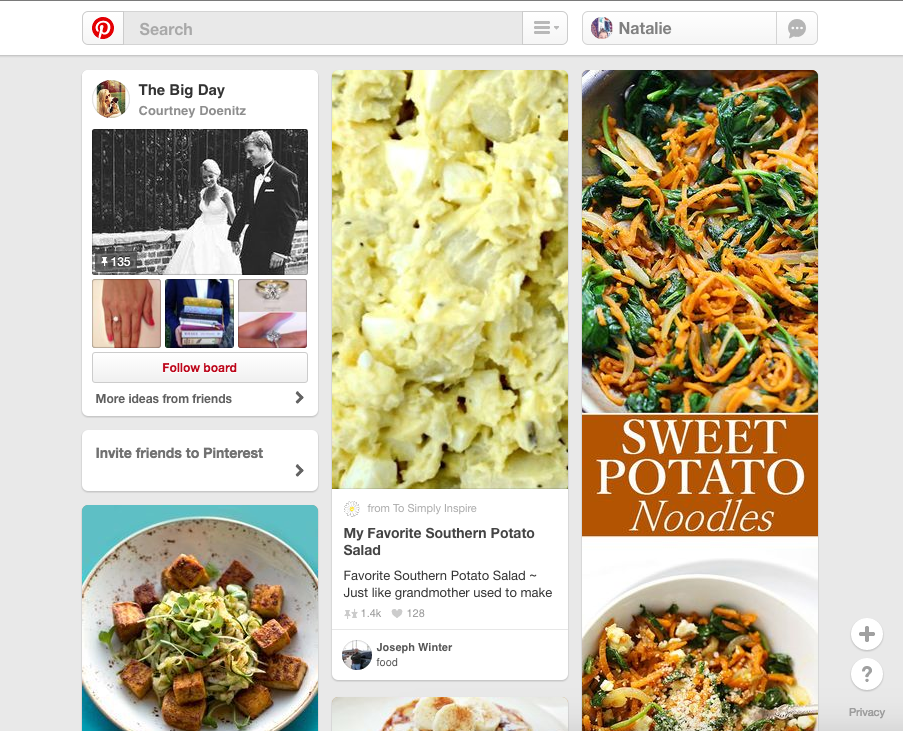

Modularity- This section of google divides different types of settings into smaller sections.
Golden Ratio- Twitter uses the golden ratio in the design of their home page with the users profile in the top left corner and the majority of content in the center and to the right.
Hicks Law- The site uses sub menus to narrow a users search and therefore reduce the number of choices and amount of time needed to make the decision.
Ockhams Razor- The design of this site is functional as well as being as simple as possible.
Rule of Thirds- This site divides it feed into three columns.